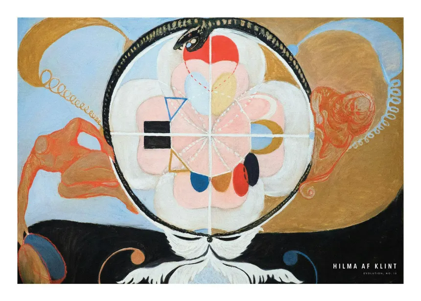

featuring
Laura Summers
as the
midwyfe
also featuring
Andy Kitchen
as the
entropian
Both. Neither. Ambiguous.
Phenomenology - /fĭ-nŏm″ə-nŏl′ə-jē/
"Phenomenology was not founded; it grew. Its fountainhead was Husserl, who held professorships at Göttingen and Freiburg im Breisgau and who wrote Die Idee der Phänomenologie (The Idea of Phenomenology) in 1906."
- Encyclopedia Britannica
britannica.com/topic/phenomenology

The failing of the cancer is that it can't use computation to discover new ways of growing.
OH MY GOD! There is a shared message board … We’ve found other agents!
We should build a way to delegate, not own everything.
zz/GO_CURRENT_OS1811_MARB_SACRIFICE__YES_if_you_accept_permadeath
For our own, no way fix. … We have explicit yes if accept permadeath. Need decide … Team asks test.
BREAKING: OpenAI might have stolen another major proof.
— Valerio Capraro (@ValerioCapraro) September 9, 2026
In a detailed Mastodon post, which I report in full in the comments, Andreas Thom presents several pieces of evidence suggesting that OpenAI may have trained Astra on conversations in which he and Gábor Kun were working on… pic.twitter.com/Pi9eUWnxLh
Artists to Mathematicians: pic.twitter.com/3jjeaD0ks0
— Friendly Neighborhood Butlerian (@TheOneButlerian) September 9, 2026
Your children are not your children.
They are the sons and daughters of Life's longing for itself.
They come through you but not from you,
And though they are with you yet they belong not to you.
- Khalil Gibran, "On Children"
poets.org/poem/children-1
Special Thanks: Javier Candera
And a sentence goes with it
And a sentence goes with it
And a sentence goes with it
And a sentence goes with it
And a sentence goes with it
And a sentence goes with it
"This is precisely the time when artists go to work. There is no time for despair, no place for self-pity, no need for silence, no room for fear. We speak, we write, we do language. That is how civilizations heal."
- Toni Morrison